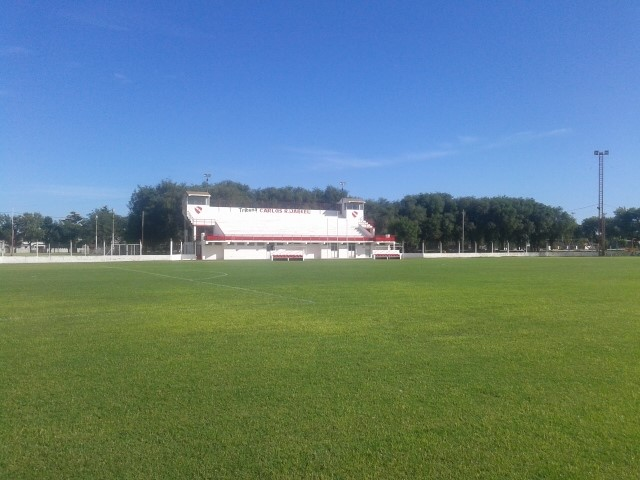

Club Sportivo Independiente

El club Sportivo Independiente, también conocido como Independiente de General Pico, es más conocido por su equipo de básquetbol, que ganó un título de la Liga Nacional de Básquet y fue 3 veces subcampeón, además de campeón Sudamericano.
Además del básquet, se practica fútbol, hockey sobre césped, balonmano, voleyball, tenis, atletismo, cestoball, etc.
Su clásico rival (que empezó siéndolo en el fútbol pero la rivalidad se trasladó a otros deportes) es el Pico Football Club
02302 - 435414
spindependiente@ligapampeana.com.ar
GRAL. PICO, LA PAMPA Av. San Martín esq. Calle 1
